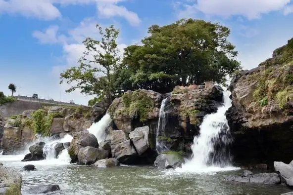
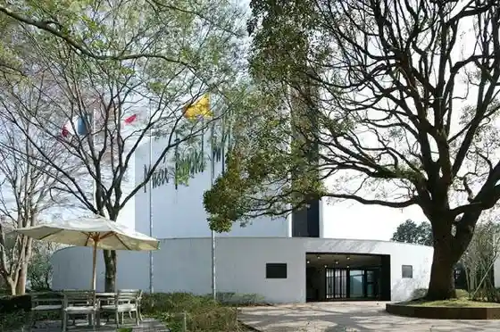
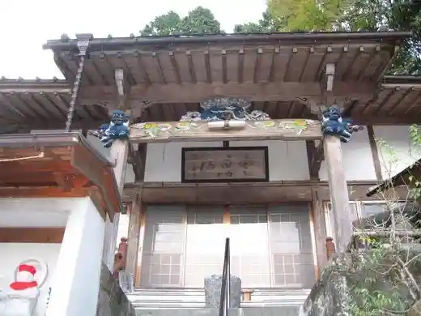
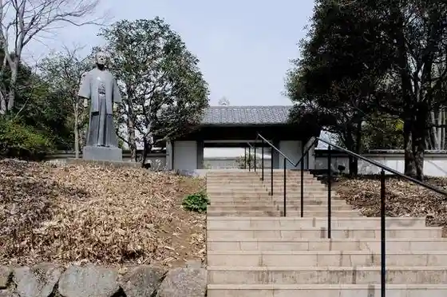
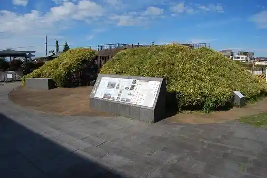

Nagaizumi
Nagaizumi · Shizuoka
Nagaizumi
Highlighted on the Shizuoka map.

Sights
Ayu Tsubo Falls
Berunaru Byufe Art Museum

Ashitaka Sansui Shrine

Nagaizumi Inoe Yasushi Literature Museum

Hara Fun Burial Mound

Fuji Take Rui Botanical Garden (Take no Museum)